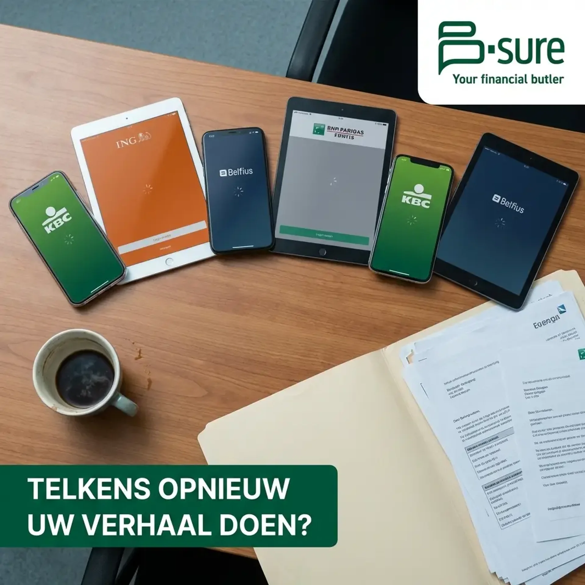
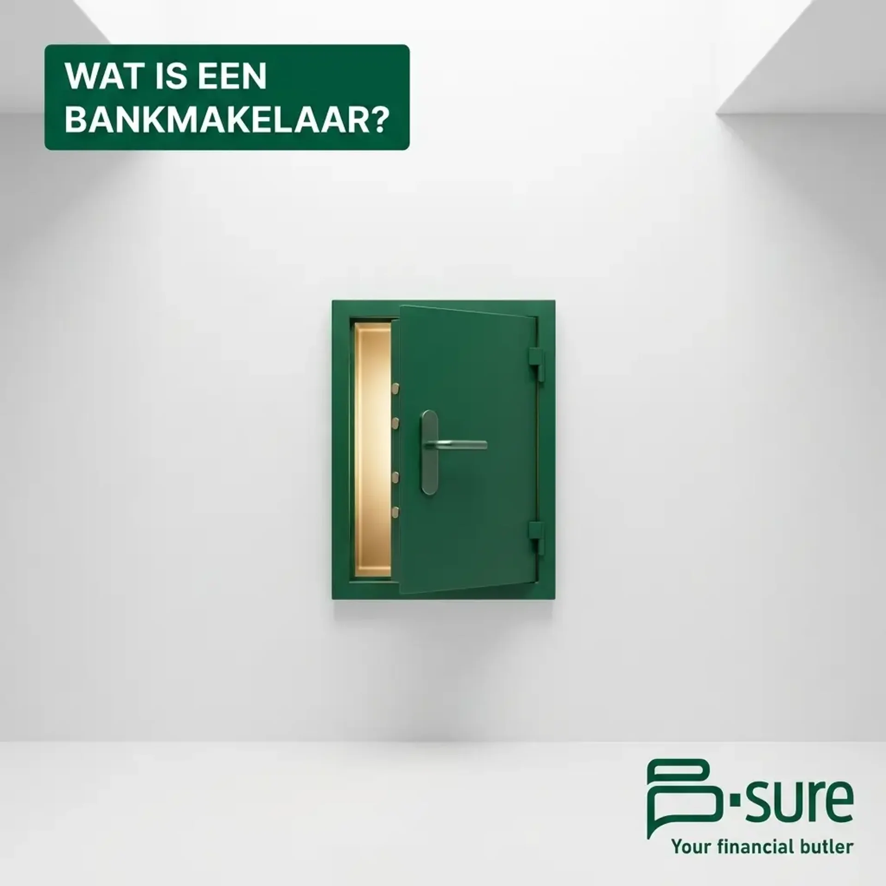
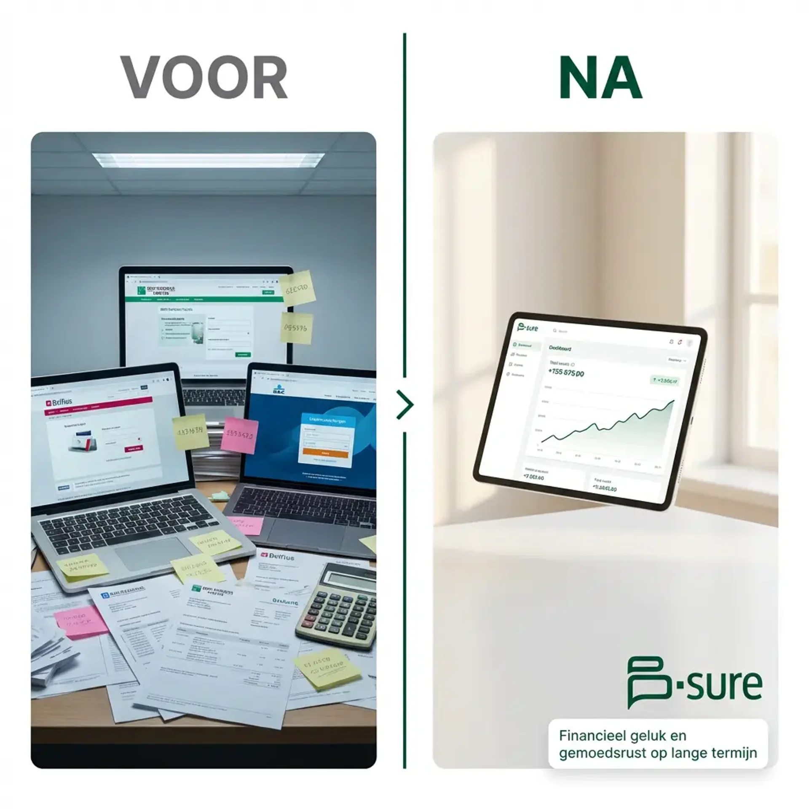
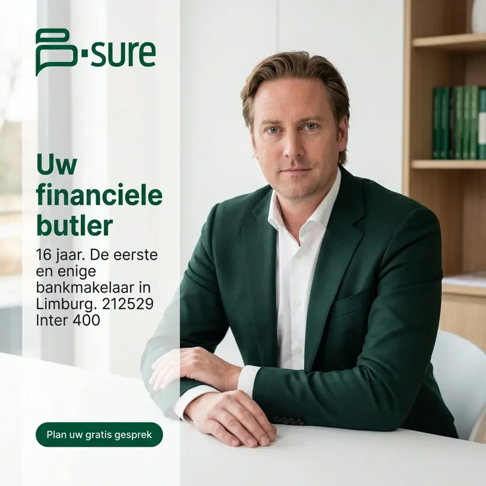
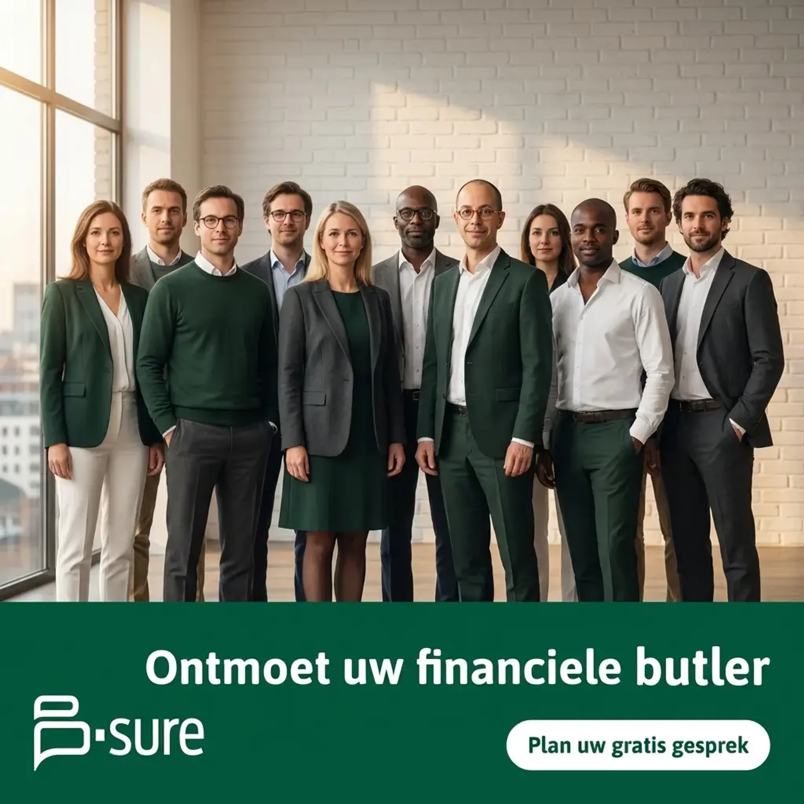
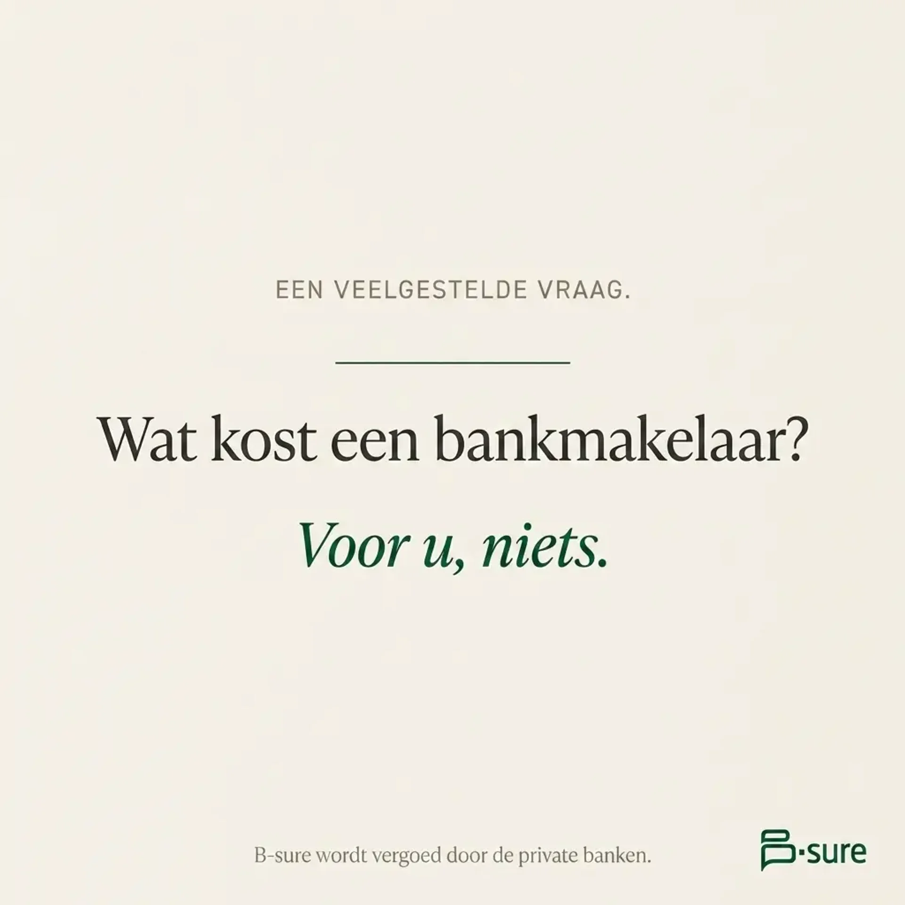
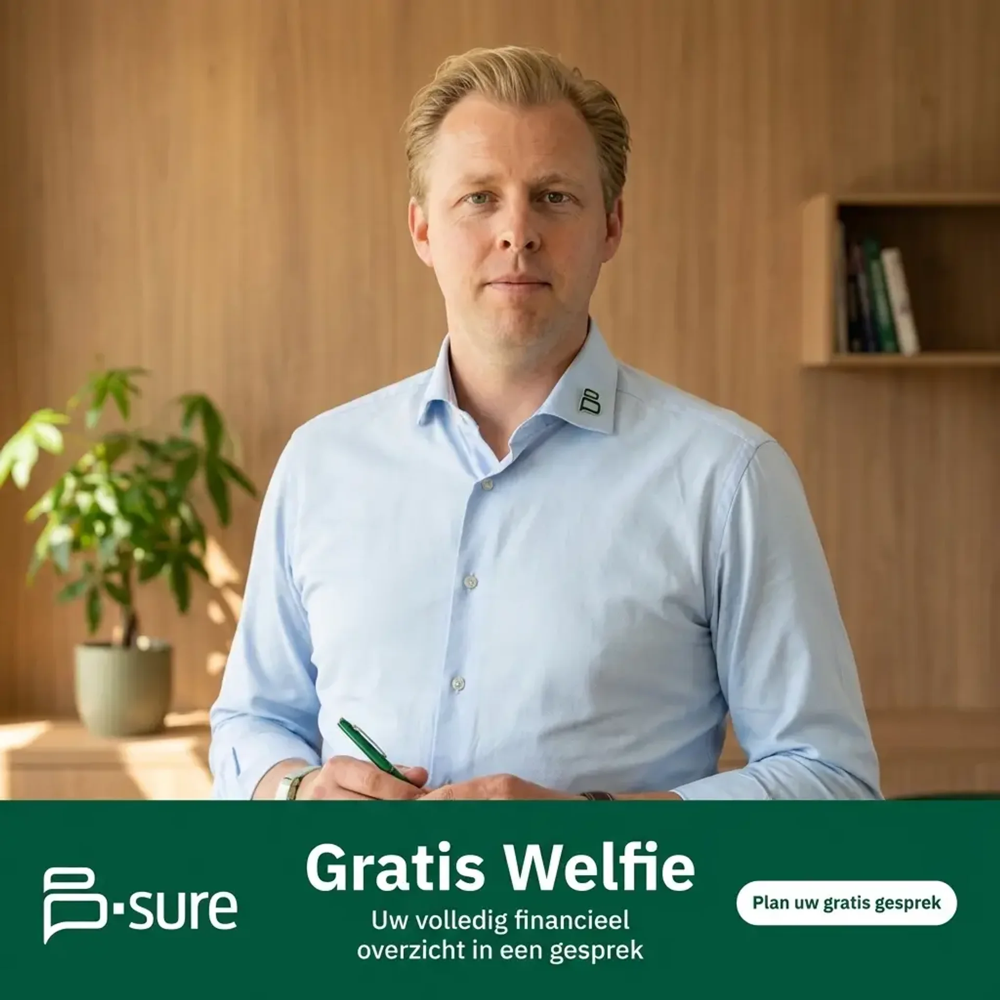
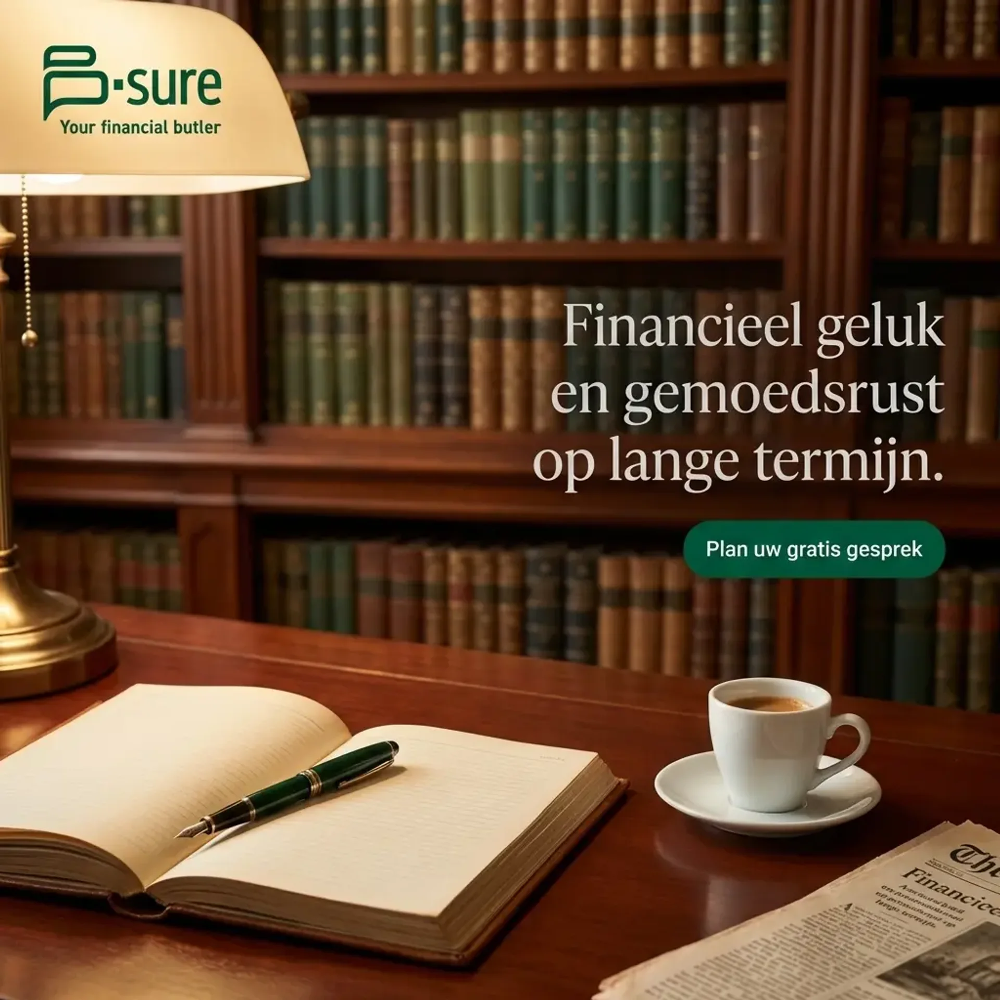
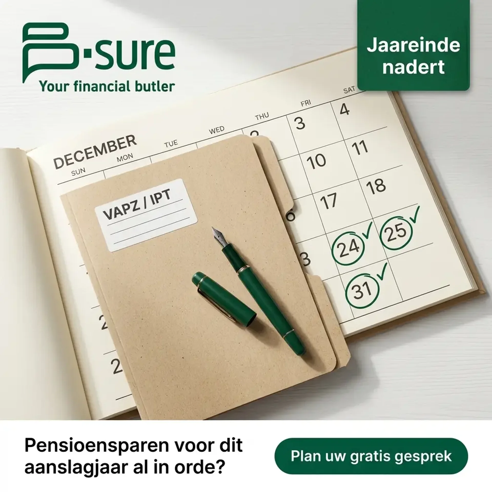

Ik heb de volledige funnel al gebouwd. De advertenties, de videoscripts, de landingspagina. Alles staat op deze pagina, en het is van u, hoe dan ook. Bekijk hoe ik u er doorheen leid:
Gratis, vrijblijvend. We worden pas betaald als het presteert.
Het patroon
Vraag een willekeurig kantoor waar hun klanten vandaan komen, en u hoort telkens hetzelfde lijstje:
Allemaal goede kanalen. Behoud ze allemaal.
Maar kijk naar wat ze gemeen hebben: elk van die kanalen is passief. U kunt ze niet opendraaien. U kunt niet beslissen "wij willen de komende twee maanden tien extra ideale gezinnen" en een van die kanalen dat laten leveren. U levert sterk werk, u blijft zichtbaar, en dan wacht u. De juiste mensen dienen zich aan, of niet.
Dat is de fout. Geen slecht kanaal, maar een ontbrekend kanaal: in dat lijstje staat er geen enkel dat u zelf in de hand hebt.
Uw beheerd vermogen groeit misschien. Maar groeit uw klantenbasis voorspelbaar?
Het ontbrekende kanaal
Omdat het de omgekeerde wereld is van alles op dat lijstje.
De vermogende ondernemers tussen 40 en 65 die u bedient, zitten elke dag op Facebook en Instagram, tussen het nieuws en de foto's van hun gezin. Meta laat u B-Sure tonen aan precies die gezinnen, in uw regio, zo vaak u wilt, met een budget dat u zelf bepaalt.
Dat betekent dat klantenwerving voor het eerst een knop krijgt:
Meer budget, meer van de juiste mensen zien u. Minder budget, minder. Geen enkel ander kanaal op dat lijstje kan dat zeggen.
De funnel filtert op vermogenssituatie voordat iemand kan boeken. Wie niet past, raakt nooit tot bij u.
De advertenties zorgen dat mensen uw naam kennen. Dat maakt elke doorverwijzing makkelijker om binnen te halen, niet moeilijker.
Doorverwijzingen hebben B-Sure gebouwd. Meta maakt de volgende fase voorspelbaar.
De bezwaren
Drie bezwaren horen we bij zowat elke vermogensbeheerder over Meta. Stuk voor stuk terecht, en stuk voor stuk de reden waarom de meeste financiele campagnes mislukken. Deze funnel is net zo gebouwd dat ze die bezwaren oplost, in plaats van eraan voorbij te gaan.
"Onze klanten zitten niet op Facebook."
De realiteit
De cijfers zeggen iets anders. In Vlaanderen is net de groep van 45 tot 65 jaar een van de actiefste op Facebook en Instagram. Uw ideale klant scrolt tussen twee vergaderingen door, 's avonds, in het weekend. En Meta is meer dan Facebook alleen: het is ook Instagram, waar diezelfde ondernemers hun netwerk, hun reizen en hun gezin volgen. Het is al lang niet meer het platform van tieners.
"Je kunt vermogende mensen toch niet meer targeten?"
De realiteit
Klopt, en dat hoeft ook niet. U target geen vermogen meer via een schuifknop bij Meta. U target via de funnel. De boodschap spreekt net de ondernemer aan die zich erin herkent, en de landingspagina vraagt naar de vermogenssituatie voordat iemand kan boeken. De funnel selecteert zelf. Daarnaast werken regio-targeting en vergelijkbare doelgroepen, gebouwd op uw beste klanten, nog perfect.
"Facebook-leads zijn tijdverspillers."
De realiteit
Dat geldt voor slechte funnels: een gratis weggever in ruil voor een e-mailadres, zonder enige filter. Niet voor deze. De kwalificatiestap, de vragen over vermogenssituatie en timing voordat iemand kan boeken, laat tijdverspillers zichzelf wegfilteren. Wie niet serieus is, vult die vragen niet in. U spreekt enkel met wie door de filter raakt. Kwaliteit is hier geen toeval, maar het ontwerp.
Alles hieronder is van u, gratis
Geen voorstel. Geen mockup. Het afgewerkte werk, klaar om te lanceren.
Negen advertenties in uw merk, geschreven voor uw klanten. Drie om aandacht te wekken, drie om vertrouwen op te bouwen, drie om te converteren.
Woord voor woord, in uw stem. Het B-sure team kan ze van deze pagina aflezen en alle drie op een namiddag filmen.
Al online. Ze informeert eerst, filtert de verkeerde mensen eruit, en boekt de juiste rechtstreeks in uw agenda.









Videoscripts
Pijn / Omstandigheid
De ondernemer die verdrinkt in zijn eigen bankzaken, zonder overzicht en zonder tijd.
Als u als ondernemer meerdere bankrekeningen, beleggingen en pensioenplannen hebt bij twee of drie verschillende banken, dan kent u dit: telkens opnieuw uw verhaal doen. Telkens opnieuw tijd vrijmaken. Telkens opnieuw al die documenten ondertekenen.
En toch vraagt u zich af: krijg ik hier eigenlijk wel de beste deal?
U bent goed in wat u doet. Uw zaak groeit. Maar uw financieel leven is intussen verspreid over drie banken, een boekhouder, misschien een verzekeringsmakelaar en een pensioenplan dat u zelf drie jaar geleden hebt afgesloten en sindsdien niet meer hebt bekeken.
Veel ondernemers proberen dit zelf te beheren. Of ze vertrouwen volledig op de bankadviseur bij hun huisbank. Maar die bankadviseur wordt betaald door zijn bank om u de producten van zijn bank te verkopen. Niet om uw totaalpositie te bewaken.
In de financiele wereld is belangenverstrengeling helaas vaak de norm. Wij geloven dat dat anders kan.
B-sure is een bankmakelaar. Dat betekent: wij vertegenwoordigen u bij de private banken van Belgie, niet de banken bij u. Wij selecteren op basis van uw financieel DNA welke beheerder echt waarde voor u toevoegt. Wij controleren of uw bank zijn beloftes nakomt. Wij rapporteren aan u.
En het enige wat u ons hiervoor betaalt? Niets. Wij worden vergoed door de banken.
Het resultaat: financieel geluk en gemoedsrust op lange termijn. Voor u en uw familie.
Klik op de knop hieronder. Op de volgende pagina ziet u precies hoe een eerste gesprek met B-sure eruitziet. Vul daarna het formulier in om een gratis gesprek aan te vragen. Geen verplichting. Gewoon een gesprek over uw financiele situatie, en wat beter kan.
Omgeving: Zittend aan een clean bureau. Warme, persoonlijke werkomgeving. Een boekenkast of plant op de achtergrond werkt goed.
Camera: Telefoon gesteund tegen een boek of op een mini-statief, ooghoogte, rechtstreeks naar camera.
Kader: Medium shot, borst en hoger, iets hoofdruimte.
Belichting: Natuurlijk raamlicht van opzij; ringlamp als alternatief, geen TL-licht boven het hoofd.
Energie: Kalm en gemeten. De toon van iemand die dit probleem honderd keer heeft gezien. Niet gehaast. Niet verkoopsgericht.
Kleding: Draag donkergroen #01573a of donker marine. Vermijd wit shirt alleen, oranje, opvallende patronen.
Contrair / Inzicht
Uw bankadviseur is niet uw vijand, maar zijn belangen zijn structureel niet de uwe.
Uw bankadviseur is waarschijnlijk een aardige persoon. Maar er is iets wat hij u nooit zal zeggen.
Hij wordt betaald door zijn bank. Niet door u.
Dat betekent dat elke keer dat hij u een product aanbeveelt, hij een reden heeft om het product van zijn bank aan te bevelen, niet het beste product op de markt.
Dat is geen aanklacht. Dat is gewoon hoe het systeem werkt. Wie denkt aan een butler, ziet discretie, loyaliteit, een onberispelijk oog voor detail. Maar de belangrijkste waarde van een echte butler is onzichtbaar: het totale gebrek aan een eigen agenda.
In de financiele wereld is die butler amper te vinden.
Veel ondernemers proberen dit op te lossen door zelf research te doen. Of door bij meerdere banken tegelijk te werken, elke bank wat te geven en te hopen dat het klopt. Maar dan hebt u drie adviseurs, elk met hun eigen agenda, en nog altijd geen totaaloverzicht.
Wij zijn bankmakelaar. Niet bankadviseur. Het verschil: wij kopen in bij de banken, namens u. Wij selecteren Degroof Petercam, Puilaetco, of Deutsche Bank afhankelijk van wat uw financieel DNA vraagt, niet wat ons het meeste oplevert.
En we controleren of de bank zijn beloftes nakomt. We checken of de aangerekende kosten correct zijn. We rapporteren aan u. Altijd in functie van uw behoefte, en niet die van de banken.
Wij zijn de eerste en enige bankmakelaar in Limburg. Zestien jaar. FSMA-erkend. En u betaalt ons niets.
Als dit klinkt als iets wat u eigenlijk al lang nodig had, klik dan op de knop hieronder. Bekijk de korte video op de volgende pagina, en vraag daarna een gratis gesprek aan. We noemen dat een Welfie: een financiele selfie van uw volledige situatie. Kosteloos. Zonder verplichting. Gewoon inzicht.
Omgeving: Staand of zittend aan een hoge tafel, of voor een raam met natuurlijk licht. Iets intentioneler dan Script 1.
Camera: Telefoon gesteund of mini-statief, ooghoogte, rechtstreeks naar camera.
Kader: Medium shot, borst en hoger, iets hoofdruimte.
Belichting: Natuurlijk raamlicht, helder en licht dramatisch, dit script heeft aanwezigheid nodig.
Energie: Zelfverzekerd, doordacht, gemeten. De toon van iemand die een rustige onthulling brengt, geen tirade.
Kleding: Draag donkergroen of antraciet/donkergrijs. Vermijd oranje, felle kleuren, casual kleding.
Resultaat / Aspirationeel
Het beeld van een vertrouwde persoon die alles regelt, bij de beste banken van Belgie, voor niets.
Stel u voor: een persoon die al uw bankzaken regelt. Bij Degroof Petercam. Bij Puilaetco. Bij Deutsche Bank. Een centraal overzicht van al uw vermogen, privaat en professioneel. 24 uur op 24.
En u betaalt die persoon niets.
Dat bestaat. En het bestaat al zestien jaar in Limburg.
Wij zijn B-sure. Bankmakelaar in Hasselt. Wij noemen onszelf uw financiele butler, en dat is geen marketingterm.
Wat is er aan geld dat voor u belangrijk is? Niet de return op uw portefeuille. Maar wat die return u toelaat te doen, te bereiken, te beschermen. Uw zaak. Uw gezin. Uw rust.
Wij beginnen altijd met uw financieel DNA. Uw waarden. Uw doelstellingen. Uw levenssituatie. Daarna selecteren wij op basis van dat DNA de private bank die voor u het meest geschikt is, bemiddelen wij, en bewaken wij uw vermogen. Attent. Discreet. Met zorg en inzicht.
U hoeft zelf niet meer bij drie banken langs te gaan om uw verhaal te doen. Wij doen dat voor u. U hoeft niet meer te vermoeden of u de beste deal krijgt. Wij controleren dat voor u.
En via onze Digitale Kluis hebt u altijd, 24 uur op 24, een actueel en geconsolideerd overzicht van al uw vermogen, over alle banken heen.
Dat is financieel geluk en gemoedsrust op lange termijn. Voor u en uw familie.
De eerste stap is een Welfie: een gratis gesprek waarbij we een financiele selfie maken van uw volledige situatie. Geen verplichtingen. Gewoon helderheid. Klik op de knop hieronder, bekijk de volgende pagina, en vraag uw gratis gesprek aan.
Omgeving: Zittend in een comfortabele, elegante omgeving, een leren stoel of een rustige hoek van het kantoor.
Camera: Telefoon gesteund of mini-statief, ooghoogte, lichte hoek mogelijk.
Kader: Medium shot, borst en hoger, iets hoofdruimte.
Belichting: Warm, zacht natuurlijk licht, dit script heeft warmte en aspiratie nodig.
Energie: Warm en verhalend. Oprecht. Zonder haast. Een beeld schetsen dat de kijker nog niet heeft durven inbeelden.
Kleding: Draag donkergroen of warme antraciet blazer. Vermijd oranje, casual kleding, opvallende patronen.
De landingspagina
Deze pagina is al live. Ze informeert eerst, kwalificeert dan op vermogenssituatie, en boekt pas daarna. Scroll er zelf doorheen.
De rekensom
Sleep de schuifregelaars naar uw eigen cijfers. Een vermogensklant blijft jaren, en dat maakt deze rekensom moeilijk te weerleggen.
Illustratief, geen garantie. Pas alles aan uw eigen realiteit aan.
Bewijs
Verschillende sectoren, hetzelfde systeem: een educatieve funnel die filtert voordat ze boekt.

145 leads in 2 weken
Meta-funnel voor een rekruteringsbureau, van nul betaalde aanwezigheid naar een volle pijplijn in 14 dagen.

66 terugkerende klanten in 27 dagen
Lokale dienstverlener, terugkerende contracten getekend binnen de eerste maand na lancering.

50 terugkerende klanten in 2 weken
Een vertrouwensgedreven lokale dienst, verkocht via een educatieve funnel, exact de structuur die voor u gebouwd is.
Hoe het werkt
Een gesprek van 30 minuten. We overlopen samen de funnel en bepalen wat een gekwalificeerde afspraak voor B-Sure betekent.
U keurt elk woord goed, het B-sure team filmt de drie scripts, wij regelen de rest. Opzet, targeting, budget, optimalisatie.
Wie door de filter raakt, boekt rechtstreeks in uw agenda. U doet waar u al het beste in bent: adviseren.
Vragen
Ongeveer twee uur, in totaal. Een gesprek, een namiddag filmen, en een ja of nee op het materiaal. Wij doen al de rest. Kost het u meer tijd dan dat, dan hebben wij iets fout gedaan.
Ja, en u houdt daar de controle over. De advertenties zijn educatief, beloven geen rendement, en niets gaat live voor u het hebt goedgekeurd. Als FSMA-erkende bankmakelaar kent u dat kader beter dan wie ook, en wij werken er strikt binnen. Conformiteit is hier een checklist, geen muur.
Nee, en dit is net waar de meeste adviseurs zich op verbranden. De landingspagina vraagt naar de vermogenssituatie en de timing voordat iemand kan boeken. Wie niet past, raakt nooit tot in uw agenda. U spreekt enkel met wie door de filter is geraakt.
Terecht. Daarom hebben we de funnel gebouwd voor we u om iets vroegen. Beoordeel het werk op deze pagina, niet onze beloftes. En we worden pas betaald als het presteert, dus als het niet werkt, is dat ons probleem, niet het uwe.
Geen retainer. Geen risico.
De funnel is gebouwd. Een gesprek om hem live te zetten: we bepalen samen wat een gekwalificeerde afspraak u waard is, en vanaf dan betaalt u voor resultaat, niet voor beloftes.
Laten we dit doen
30 minuten, vrijblijvend. In het slechtste geval houdt u alles hierboven. Kies hieronder een moment.